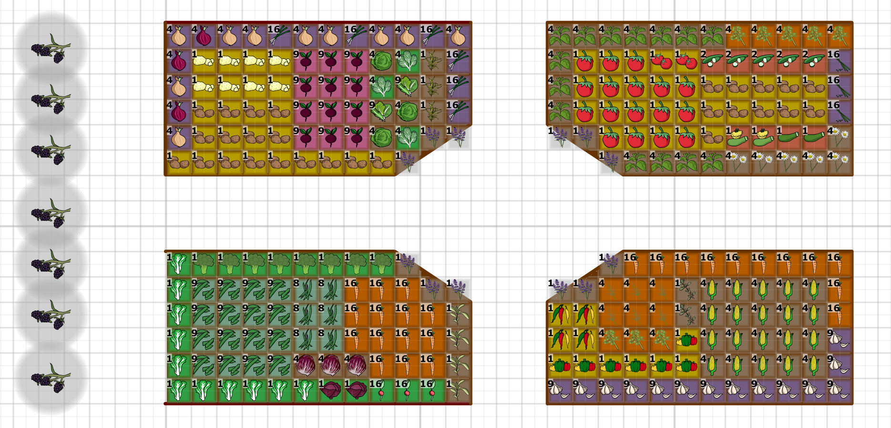
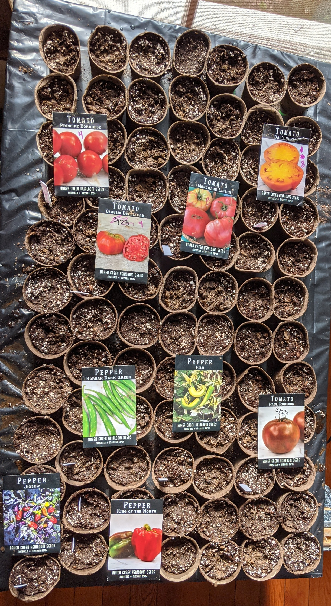

Seed Starting 2020

Seed source
All seeds from Baker Creek Heirloom Seeds.
Mix/conditions
Started with 2/5 peat, 2/5 home made compost, 1/5 perlite mix in 3" peat pots in front of a south facing window.
2-16-20

Tomatoes
Target: 36 tomato plants (34 large, 2 small)
Number of pots started with seeds:
- 12 Paul Robeson
- 8 Dad's Sunset
- 10 Mortgage Lifter
- 12 Beefsteak
- 4 Principe Borgese
Put on a heat mat.
Peppers
Target: 4 hot pepper plants, 7 green/red pepper plants.
Number of pots started with seeds:
- 8 Fish Peppers (medium/hot)
- 8 Korean Dark Green Peppers (hot)
- 8 Jigsaw Peppers (medium/hot)
- 12 King of the North (red/green mild peppers)
Put on a heat mat.
Overview Photo
This is everything we planted today in one nice aerial overview photo.
